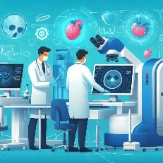
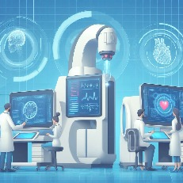
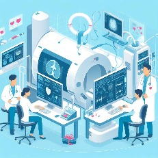

A integração da IA na saúde.
A constante evolução da tecnologia no mercado de trabalho tem chamado a atenção de muitos profissionais em razão de integrações de projetos inovadores como a IA (Inteligência Artificial) em áreas como a indústria de saúde. A IA se apresenta útil ao auxiliar o profissional.
introdução.
O que é a IA e como ela funciona.
Como a IA se integra na indústria da saúde?
Veja como a IA auxilia no dia a dia da indústria de saúde e os problemas que podem ser enfrentados.
Considerações finais.
Conclusão da pesquisa.

O impacto da IA na saúde
Nos dias atuais qualquer um já ouviu falar da IA (inteligência artificial). A IA nada mais é que a capacidade de sistemas operacionais executarem tarefas como racíocinio, aprendizado, resolução de problemas e etc. Que até então eram executadas por humanos. A IA busca criar maquinas capazes de imitar processos cognitivos humanos para realizar tarefas complexas de forma autônoma. A rápida evolução da Inteligência Artificial (IA) tem transformado diversos setores, e a indústria de saúde não é exceção. Este trabalho explora o impacto significativo que a IA tem na saúde, examinando suas aplicações, benefícios e desafios. A convergência da tecnologia e cuidados com a saúde apresenta oportunidades promissoras, mas também suscita questões éticas e práticas importantes.
Mas como a IA se integra na área da saúde? Veja a seguir como a IA pode auxiliar na saúde

Diagnóstico Preciso e Rápido:
A IA proporciona avanços substanciais no diagnóstico médico, acelerando a identificação de doenças e reduzindo erros. Sistemas de aprendizado de máquina analisam vastas quantidades de dados, desde imagens de exames até registros médicos, proporcionando diagnósticos mais precisos.
As principais áreas de doenças que utilizam a IA e suas ferramentas são as áreas de oncologia, cardiologia e neurologia. João Brainer, doutor em neurologia e neurociência pela Universidade federal de são paulo (UNIFESP) e a Universidade de Columbia diz que a inteligência artificial é um grande apoio a área de exames, diagnósticos, tomografias, ressonâncias magnéticas e ultrassonografia.
“Nos ajuda e auxilia em pontos que antes eram analisados somente pelo médico. Mas vale ressaltar que ainda não possuímos nenhum recurso que substitua, de fato, o médico. A tecnologia vem para somar e ajudar.”
O médico utiliza softwares como RAPID.AI, PROpHET, Compact e Hers para tomografia, diagnóstico de síndromes neurológicas em AVC, e ajuda a evitar complicações.
Se tratando de softwares que interpretam exames de tomografias e ressonância de crânio em pacientes com AVC, Brainer destaca:
“A inteligência artificial consegue identificar as áreas do cérebro que estão em sofrimento e as que já morreram devido ao AVC isquêmico e, com isso, aumentar a chance de terapêutica. Graças a esses equipamentos hoje temos a oportunidade de tratamento de pacientes com AVC isquêmico de até 24 horas, ou seja, 20 horas a mais do que 23 anos atrás.”
Tratamento personalizado:
Com algoritmos inteligentes, é possível personalizar os planos de tratamento com base nas características genéticas e históricos médicos individuais. Isso não só melhora a eficácia do tratamento, mas também reduz potencialmente os efeitos colaterais.
A IA permite tratamentos e recomendações personalizadas com base nas características individuais do paciente, analisando histórico médico, exames, genética e informações comportamentais para oferecer um plano de cuidados específico e adequado.

Gestão de Dados e Informações:
A IA otimiza a gestão de dados médicos, agilizando processos e melhorando a acessibilidade a informações cruciais. Isso contribui para uma prestação de cuidados mais eficiente e coordenada entre os profissionais de saúde.
A IA pode monitorar remotamente a saúde dos pacientes, incluindo aqueles com doenças crônicas. Dispositivos médicos conectados à Internet podem coletar dados de pacientes e enviá-los aos médicos para análise, permitindo a detecção precoce de problemas médicos e reduzindo visitas frequentes ao consultório médico.
Desafios Éticos e de Privacidade:
A integração da IA nos cuidados de saúde levanta desafios éticos e de privacidade. Garantir a segurança dos dados e a transparência nos algoritmos é crucial para proteger a confidencialidade e a privacidade dos pacientes.
Garantir a utilização responsável e transparente da IA nos cuidados de saúde é um desafio ético fundamental, exigindo a compreensão e a explicação dos resultados e da funcionalidade dos algoritmos de IA por parte dos profissionais de saúde e dos pacientes.
Adoção e Treinamento Profissional:
A implementação bem-sucedida da IA na saúde requer uma sólida infraestrutura tecnológica e o treinamento adequado de profissionais de saúde. A resistência à adoção e a falta de compreensão técnica são desafios que precisam ser superados.
Conclusão
Em síntese, a integração da Inteligência Artificial na indústria de saúde representa uma revolução inovadora. Seus benefícios tangíveis, como diagnósticos mais precisos e tratamentos personalizados, oferecem promessas significativas para aprimorar a qualidade dos cuidados médicos. No entanto, é imperativo enfrentar os desafios éticos e práticos para garantir uma transição suave e ética. O progresso contínuo na pesquisa, desenvolvimento e regulação é essencial para colher os frutos plenos da IA na saúde, proporcionando benefícios duradouros para pacientes e profissionais da saúde.